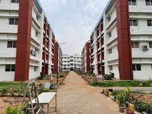
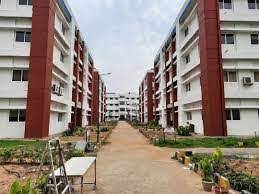

Anil Neerukonda Institute of Technology & Sciences (ANITS), Visakhapatnam is owned by Megha Engineering and Infrastructure Limited (MEIL) which is one of the top infrastructure and manufacturing company in India with headquarters at Hyderabad. The institute was established in the academic year 2001-02 by Anil Neerukonda Educational Society (ANES) which was founded by Dr. N.B.R. Prasad, an NRI Philanthropist from the USA, with industrialists and eminent educationists in memory of Late Anil Neerukonda, S/o. Dr. N.B.R. Prasad.
Anil Neerukonda Institute of Technology & Sciences
Sangivalasa Bheemunipatnam (Mandal)
Visakhapatnam
531162